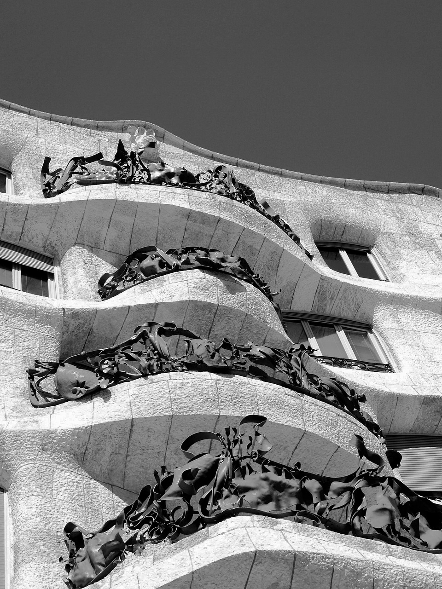

Designhistoria
Susanne Vihma skriver följande i sin bok om designhistoria
"Det talas fortfarande om:
Förhållandet mellan konst och design,
växelverkan mellan människan och maskinen,
formgivningens sociala ansvar,
designens position inom företagen samt
de olika kraven som ställs på formgivning och marknadsföring."
Detta är en resa genom form, funktion och tid.
Från modernismens grid-system
till postmodernismens revoltution
och vidare in i den Digitala Designeran.
Industrialism
Övergång från jordbruk till industri. Fokus på fabriker, maskiner och massproduktion. Teknologiska framsteg och urbanisering.
Modernism
Design av föremål med kombination av funktionalitet och estetik. Spridning inom Europa under 1920-talet.
Postmodernism
Från 1970-talet började designers låna stilar från tidigare epoker och göra om dessa i nya färger, former och material.
Digital Design
Utvecklingen av datorer, Internet och Artificiell Intelligens. Interaktivitet. UX. Systemtänk.

